地政学
敦煌は河西回廊の西端で、新疆、青海、甘粛が近づく砂漠の結節点です。陽関と玉門関の記憶は、現在の観光だけでなく、交通、国境感覚、文化保護、内陸開発を考える入口になる街でもあります。水の政治もあります。
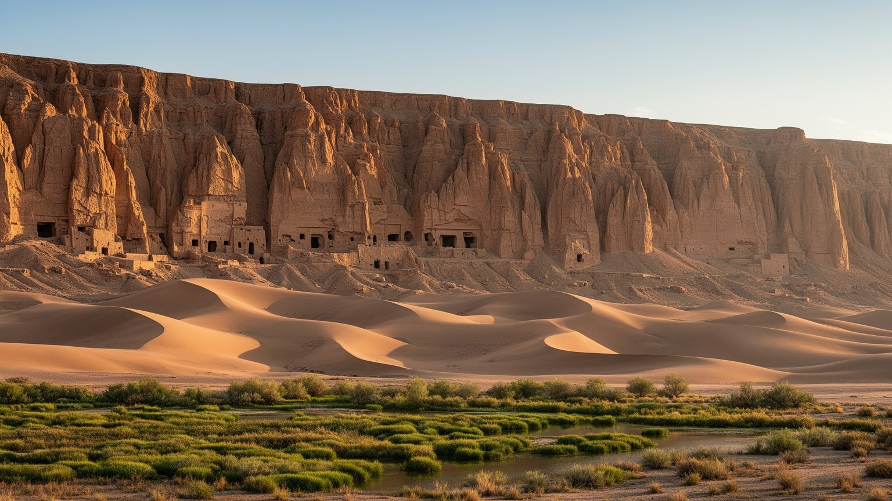
🇨🇳 中国 / 甘粛省 / World City Atlas
河西回廊の西端で、莫高窟の仏教美術、鳴沙山と月牙泉、陽関と玉門関、党河の水、砂漠観光、オアシス農業が重なるシルクロード都市です。
都市の骨格
敦煌は大都市ではありませんが、中国、中央アジア、仏教美術、砂漠環境、観光経済をつなぐ重い結節点です。党河の水と細い緑地、石窟の保存、観光客の流れが、日々の街の動きを決めています。
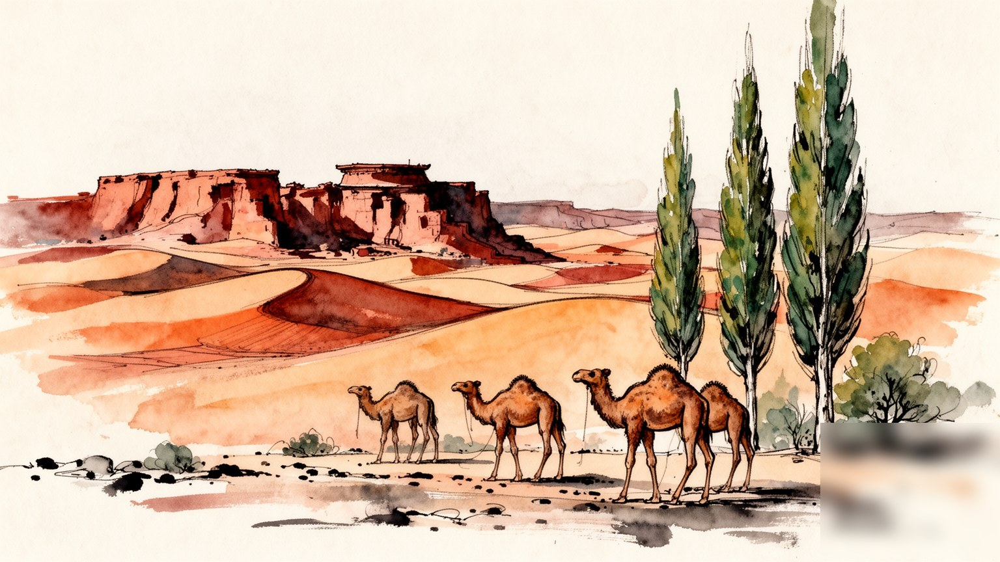
敦煌は河西回廊の西端で、新疆、青海、甘粛が近づく砂漠の結節点です。陽関と玉門関の記憶は、現在の観光だけでなく、交通、国境感覚、文化保護、内陸開発を考える入口になる街でもあります。水の政治もあります。
観光、宿泊、飲食、交通、農業、文化創意、光伏発電が雇用を作ります。繁忙期の収入は大きい一方、季節差、水不足、物価、若者の職業選択が家計を揺らし、働く時間も観光暦に寄ります。農家も店も支える街です。
莫高窟の仏教美術、道教や民間信仰、イスラム系住民の生活、漢唐の記憶が重なります。信仰は石窟の過去に閉じず、祭礼、家庭、博物館、学校、観光案内の言葉に姿を変え続けます。舞台にも路地にも残る街です。続きます。
旅人は莫高窟、鳴沙山、月牙泉、夜市へ向かいます。住民には水、暑さ、住宅、医療、教育、観光混雑、農地の維持が日常で、名所の近くに暮らしの制約と誇りが同居しています。通学と買い物も続く街です。夜も動きます。
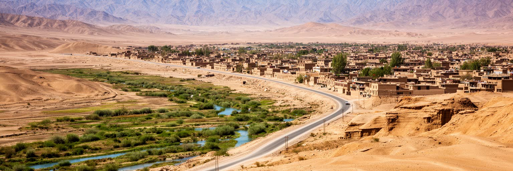
敦煌の位置は、地図上の一点よりも、細い通路の終端として理解すると見えてきます。河西回廊は黄土高原と中央アジアの乾燥地を結ぶ帯であり、敦煌ではその緑の帯が砂漠、ゴビ、山地、盆地へほどけていきます。東には酒泉や嘉峪関へ続く交通路があり、西には新疆へ向かう長い荒野、南には祁連山や阿爾金山の水源域、北には玉門関方面の乾いた台地が広がります。古代の旅人にとってここは、物資を整え、情報を集め、祈り、隊商の安全を測る場所でした。現代の敦煌も、空港、鉄道、高速道路、観光バス、砂漠道路によって結ばれていますが、距離の感覚はなお強いです。都市は巨大な市域を持ちながら、実際の居住と農地は党河に支えられたオアシスへ集中します。だから敦煌の広さは、都市の余裕というより、水が届く場所と届かない場所の差を示しています。街を歩くと、ホテル、夜市、学校、病院、行政機関は比較的まとまっている一方、少し外へ出れば砂丘、礫原、風、日射が支配します。敦煌の地政学は、国境線そのものではなく、内陸中国が西域へ開く時に必ず通る環境の境目にあります。ここでは交通と水、遺産と警備、観光と防砂が同じ都市計画の課題になります。砂漠へ向かう道は名所への道であると同時に、都市の脆さを露出させる線でもあります。移動の自由さは水場と管理の上に成り立ち、道の美しさは常に維持の負担を伴います。敦煌の広域性は、中心市街の小ささと対照をなし、地理の大きさが行政と生活を試しています。
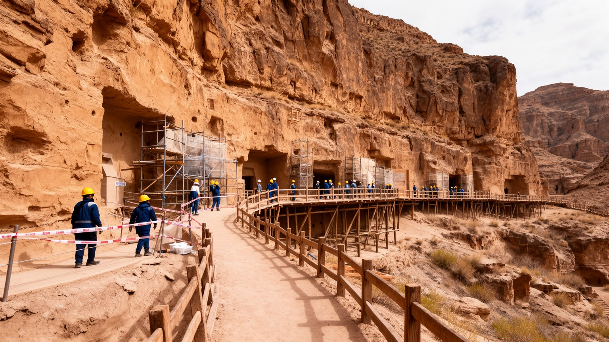
莫高窟は敦煌を世界に結びつける最大の文化装置です。崖面に開かれた洞窟には、仏教、交易、王権、供養、絵師の技術、言語の混交が残り、壁画と塑像は単なる美術品ではなく、砂漠の通過点で人びとが何を恐れ、何に救いを求めたかを語ります。ですが現在の莫高窟は、無制限に鑑賞できる遺跡ではありません。湿度、二酸化炭素、光、塵、振動、観光客数が壁画に影響するため、入場管理、デジタル展示、研究、修復、監視が不可欠です。訪問者が短時間で洞窟を巡る背後には、保存科学者、解説員、警備、清掃、予約システム、交通誘導の仕事があります。敦煌研究院の活動は、遺産を観光資源として使いながら、消耗させないための制度でもあります。莫高窟の価値は、名品の数だけでなく、保存と公開の緊張を都市経済の中心に置いている点にあります。観光客が増えるほど、宿泊、飲食、交通の収入は増すが、遺産の耐久性は試されます。石窟は過去の信仰の空間であると同時に、現代の予約、研究予算、国際協力、地域雇用の場になっています。敦煌を読むには、壁画の美しさと同じくらい、その美しさを未来へ渡すためにどの洞窟を見せ、どの洞窟を休ませるかという判断を見る必要があります。保存は静かな作業に見えますが、都市の経済と誇りを支える中心的な仕事です。展示センターで映像を見てから洞窟へ向かう流れも、感動を弱めるためではなく、脆い壁面を守りながら理解を深めるための都市的な仕組みです。
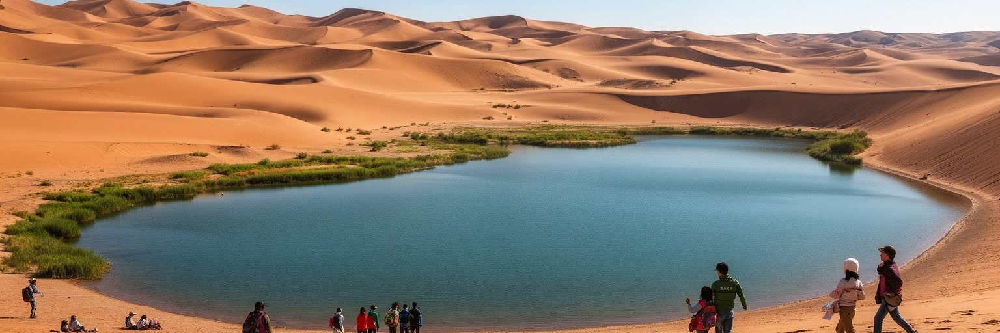
鳴沙山と月牙泉は、敦煌の景観を最も直感的に伝える場所です。砂丘の曲線と小さな泉が近接する風景は、旅人に砂漠の厳しさとオアシスの奇跡を同時に見せます。ですがこの名所は、ただ自然が美しく残った場所ではありません。地下水位、観光施設、植生管理、砂の移動、道路、ラクダ遊覧、夜間照明、客の導線が複雑に関わり、景観を保つための人為的な調整が続いています。泉が細れば敦煌の象徴性は揺らぎ、砂丘が固定されすぎれば自然の動きは弱まります。観光客は砂滑りやラクダ、夕日、写真を楽しむが、現場では安全管理、動物の扱い、清掃、熱中症対策、チケット運営、交通渋滞が日常的な課題になります。夏の日射は強く、砂は歩行を重くし、短い観光体験の背後には多くの労働があります。月牙泉は文化的な名所であると同時に、水文学的に繊細な場所でもあります。敦煌の市街が党河と地下水に支えられていることを考えると、泉の水は観光写真の中心であるだけでなく、オアシス都市全体の水意識を映す鏡です。美しい砂丘を守るには、訪問者数、車両、宿泊開発、農業用水、地下水管理を切り離して考えられません。鳴沙山を登る経験は、砂漠の自由さではなく、限られた水をめぐる都市の緊張を身体で知る経験でもあります。夕方の柔らかな光は名所を優しく見せるが、日中に働く人や動物にとっては過酷な職場であり、観光の快適さは環境管理と労働条件に支えられています。
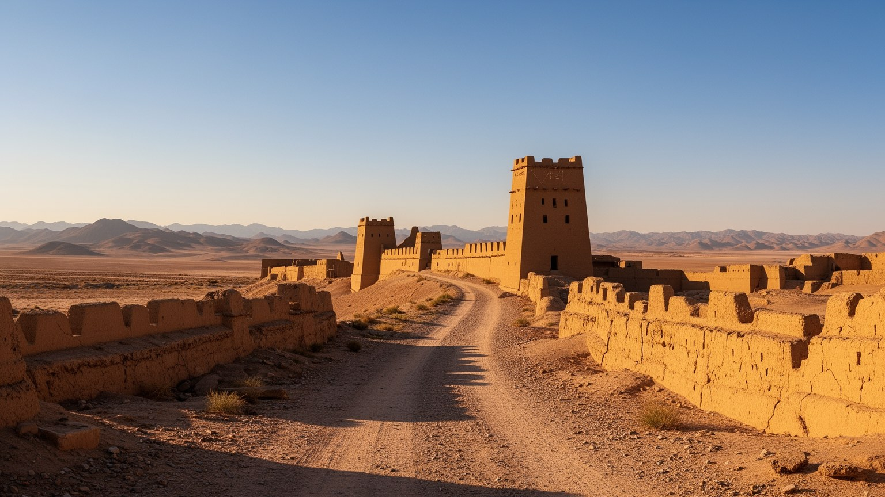
陽関と玉門関は、敦煌が単なる遺跡都市ではなく、境界を管理する都市でしたことを示します。漢代の関門は、軍事、防衛、通行、税、外交、情報、交易を結ぶ施設であり、中原から西域へ出る心理的な境目でもありました。唐詩に残る別れの情景や、玉の道、使節、僧侶、商人の移動は、関門を文学的な記憶に変えたが、現実には水場、馬、兵站、監視、砂嵐、孤独、危険が伴りました。現在の訪問者は復元展示や遺構を巡り、荒野の広さを眺めます。そこでは、建物の壮麗さよりも、何もないように見える空間をどう越えたかが重要になります。関門の遺跡は、東西交流を華やかに語るだけでは足りません。誰が通行を許され、誰が止められ、どの物資が価値を持ち、どの情報が国家を動かしたのかを考える必要があります。敦煌市にとって陽関と玉門関は、観光ルートを西へ広げる資源である一方、広大な市域の道路維持、警備、案内、景観保護を必要とする遠隔地の施設でもあります。関門の記憶は、現代の国境管理や内陸開発と直結するわけではありませんが、国家が乾燥地の移動をどう理解し、支配し、物語化してきたかを考えさせます。敦煌の西へ出る道をたどると、都市の中心は夜市やホテルだけでなく、荒野の中の標識、遺構、風の音にも広がっていることが分かります。遺跡の周辺で働く案内人や運転手は、この遠さを商品にしながら、同時に安全と時間管理を担っています。
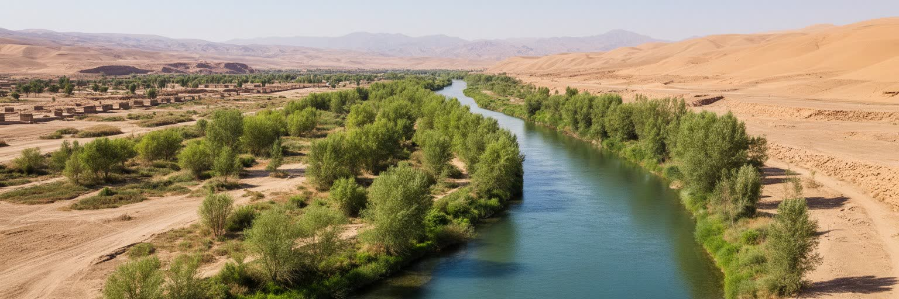
敦煌の生活を支える基盤は、党河と地下水を中心とする水管理です。市域は広大でも、実際に人が住み、畑を作り、ホテルを建て、街路樹を育てられる範囲は水に強く制限されます。党河は祁連山系から流れ、オアシスを潤してきたが、灌漑、都市用水、観光施設、植林、防砂、工業、気候変動の影響で水の配分は常に難しいです。農家にとって水路の順番と量は収穫を決め、ホテルや飲食店にとっては繁忙期のサービスを支え、市民にとっては住宅、学校、病院、緑地の質に関わります。水は見えないインフラであると同時に、政治的な配分の問題でもあります。月牙泉の保全、湿地や西湖の生態、農地の節水、地下水位の回復は互いに独立していません。観光客が砂漠の中の泉に驚く時、住民は水道料金、農業用水、緑化、節水設備、渇水年の不安を同じ都市の現実として受け止めています。敦煌の水管理は、古代の隊商が水場を求めた時代から続く課題が、現代の都市政策へ姿を変えたものです。光伏発電や文化観光が成長しても、水が足りなければ都市の拡張には限界があります。街路の緑や農地のブドウは豊かに見えますが、その背後には用水計画、ポンプ、貯水、節水灌漑、行政調整があります。敦煌の都市性は、砂漠に勝つことではなく、砂漠の中で水の限界を知りながら暮らす技術にあります。節水設備や用水路の補修は観光写真に写りにくいが、都市を支える最も実務的な文化です。水を守る判断は、景観、農業、住まいの将来を同時に決めます。
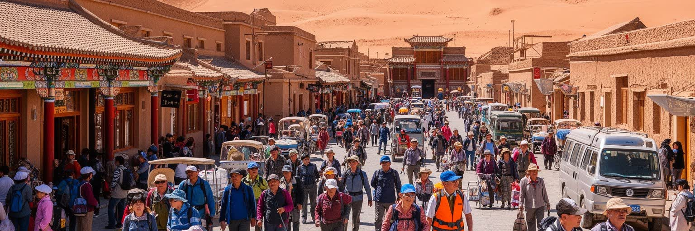
敦煌の観光産業は、莫高窟、鳴沙山・月牙泉、陽関、玉門関、夜市、演芸、博物館、砂漠キャンプを組み合わせて成り立ちます。市の規模に対して訪問者数は非常に大きく、宿泊、飲食、交通、ガイド、土産物、写真、衣装体験、ラクダ遊覧、清掃、警備、予約管理が幅広い雇用を生みます。統計上も第三次産業の比重が高く、観光は敦煌の家計と財政を支える主要な柱です。一方で、観光は季節差が大きいです。夏休みや連休には客が集中し、ホテル価格、道路渋滞、従業員の長時間労働、熱中症対策が課題になります。閑散期には収入が落ち、店や宿は維持費と人件費を抱えます。若者にとって観光は地元で働く道を開くが、接客、語学、オンライン予約、短期契約、夜間労働が負担になることもあります。文化遺産を扱う仕事では、単に客を増やすだけでなく、知識、マナー、保存への理解も求められます。敦煌夜市の賑わいは都市の明るい顔ですが、その背後には仕入れ、調理、片付け、廃棄物処理、価格競争、家族労働があります。観光が都市を豊かにするには、利益が大規模施設だけでなく小さな店、農家、運転手、解説員、清掃員にも届く必要があります。敦煌の魅力は客を呼ぶ力を持つが、その力が働く人の生活を不安定にしない仕組みが、観光都市としての成熟を左右します。夜遅くまで続く商いの隣では、翌朝の学校や通院もあり、観光時間と生活時間の調整が欠かせません。
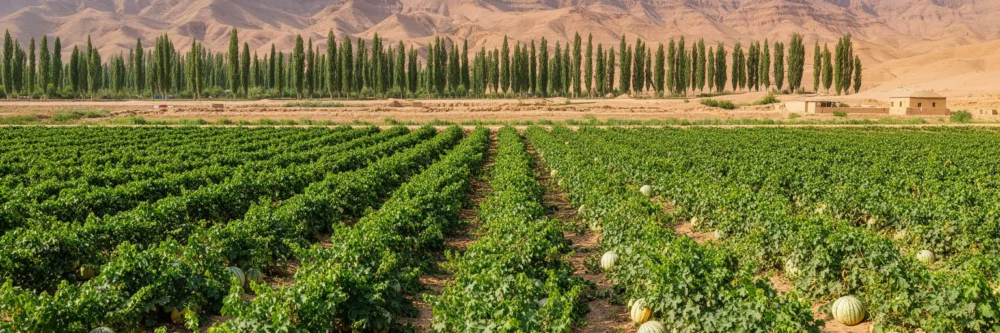
敦煌の経済を観光だけで見ると、オアシス農業の重みを見落とします。砂漠とゴビに囲まれた市域の中で、耕地と果樹園は水路に沿って広がり、ブドウ、メロン、杏、ナツメ、野菜、穀物、綿花、畜産が地域の食と現金収入を支えます。農業は古代から隊商と都市を支えた基盤であり、現在も観光施設の食材、土産物、家庭の食卓、農村の雇用に関わります。乾燥地の農業では、灌漑の効率、塩害、土壌、風、日射、出荷価格、労働力不足が大きな課題になります。観光で収入を得る家族が農地も守ることがあり、農村と市街の仕事は重なっています。果物や干しブドウは敦煌らしい商品になりますが、ブランド化や観光販売だけで農家の安定が保証されるわけではありません。水を多く使う作物と節水型の栽培、農地保全と住宅開発、若者の都市就業と高齢化した農村の間には緊張があります。市場を歩くと、観光客向けの土産物と住民向けの食材が同じ空間に並び、オアシスの生産が都市の生活を支えていることが分かります。農業は景観の緑を作るだけでなく、防砂林や土地管理とも関係します。畑が放棄されれば、緑の帯は弱まり、砂や風の影響も増します。敦煌の持続性は、石窟を守る力だけでなく、水を分け、農地を維持し、農家が暮らし続けられる経済を作れるかにもかかっています。農産物が夜市やホテルの食卓へ届く流れを見れば、観光都市と農村は別々ではなく、同じ水路に支えられた生活圏だと分かります。
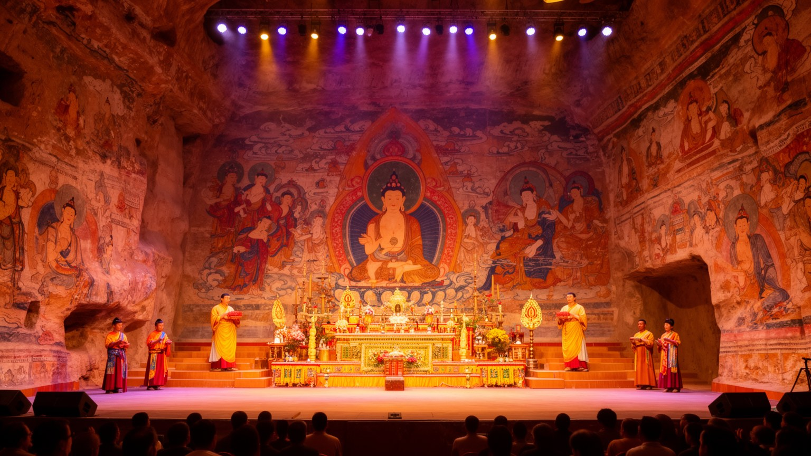
敦煌の文化は、莫高窟の壁画だけに閉じていありません。仏教、道教、民間信仰、イスラム系住民の暮らし、漢唐文化の記憶、少数民族の往来が重なり、祭礼、音楽、舞踊、曲子戯、学校教育、観光演目の中で語り直されています。飛天や反弾琵琶のイメージは敦煌を象徴するが、それが商品や舞台の記号になるほど、実際の信仰や地域芸能の厚みは見えにくくなります。古代の壁画には、供養者、商人、僧侶、職人、楽人、守護神、異なる衣装や顔立ちが描かれ、シルクロードの多層性が残ります。現代の都市では、そのイメージが博物館、劇場、土産物、ホテル装飾、公共彫刻、学校の教材として使われます。文化産業は雇用と誇りを生むが、芸能を観光客向けの短い演目に圧縮する危険もあります。信仰の記憶を尊重するには、壁画を美しい図柄として消費するだけでなく、なぜ人びとが砂漠の入口で洞窟を開き、祈り、絵を描かせ、旅の安全を願ったのかを考える必要があります。敦煌の芸能や祭礼は、過去を再現する展示ではなく、現代の住民が地域の名前をどう引き受けるかに関わります。観光客の拍手、子どもの稽古、研究者の解説、家庭の信仰は別々に見えて、同じ文化記憶を支える異なる場です。敦煌を歩くと、祈りは石窟の奥だけでなく、舞台の動きや街の名前にも残っています。文化が経済になるほど、誰の声で語るか、地域の子どもがどう学ぶかが重要になります。
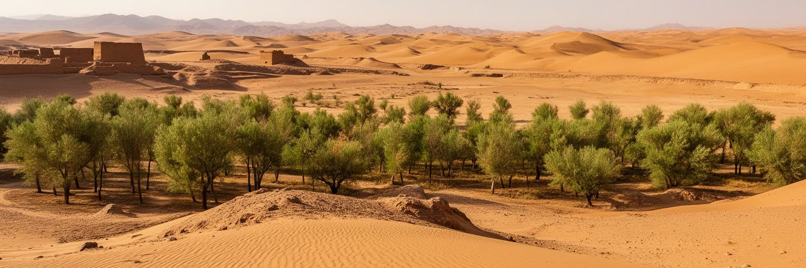
敦煌の環境問題は、砂漠が美しい観光資源であることと、生活を脅かす力であることの両面を持ちます。乾燥、強風、少雨、蒸発量の大きさ、砂の移動は、農地、道路、空港、住宅、遺跡、観光施設に影響します。防砂林、草方格、灌漑管理、湿地保全、道路脇の緑化は、景観のためだけでなく、都市の安全を守るインフラです。砂丘は観光客に非日常を与えるが、住民にとっては風塵、視界不良、清掃、農地への被害、建物の劣化をもたらします。気候変動で気温や降水の変動が大きくなれば、水資源と防砂の計画はさらに難しくなります。莫高窟の保存にも環境は直結します。湿度や風塵が壁画に影響し、周辺の植生や観光動線の管理が必要になるからです。環境保全は行政や研究機関だけの課題ではなく、農家、観光事業者、学校、住民の節水やゴミ処理とも関わります。砂漠体験を売り物にする都市が、その砂漠から暮らしを守るために水と緑を使うという矛盾は、敦煌を理解する重要な入口です。防砂林を増やせば水を使い、緑を減らせば砂が近づきます。観光開発を進めれば収入は増えるが、道路、廃棄物、地下水への圧力も高まります。敦煌の環境政策は、自然を征服する発想ではなく、風と砂と水の限界を見極めながら、都市が長く残るための均衡を探す作業です。住民の清掃、農家の節水、観光客の行動も、その均衡を毎日少しずつ左右しています。
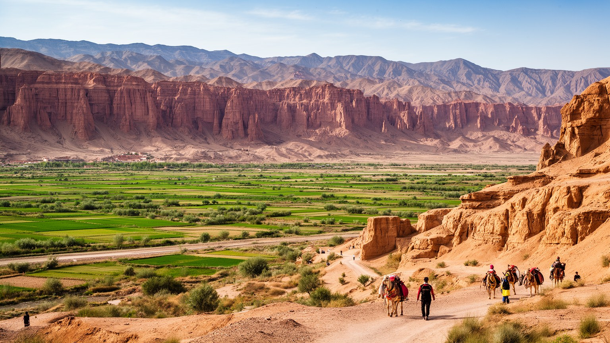
敦煌を理解するには、莫高窟の名声だけでも、砂漠観光の写真だけでも足りません。この都市は、河西回廊の西端という地理、党河に支えられたオアシス、仏教美術の保存、陽関と玉門関の境界記憶、鳴沙山と月牙泉の景観、観光労働、農業、光伏発電、環境保全、住民の日常が重なって成り立ちます。人口規模は大きくないが、市域は広く、都市の密度と砂漠の広がりの差が非常に大きいです。観光客は数日で名所を巡れるが、住民は水の配分、暑さと寒さ、繁忙期の混雑、閑散期の収入、農地の維持、子どもの教育、遺産保護の責任を日々引き受けています。敦煌の価値は、東西交流を象徴する過去にあるだけでなく、その過去を壊さずに現在の仕事へ結びつけようとする制度と労働にあります。石窟は守られなければならず、砂漠は楽しませるだけでなく抑えなければならず、水は都市を広げる前に分け合わなければなりません。こうした矛盾が近い距離にあるから、敦煌は小さな観光都市以上の意味を持ちます。街を読む時は、壁画の色、砂丘の曲線、夜市の明かりだけでなく、研究者、農家、運転手、解説員、店主、学生、清掃員の時間を同じ地図に置きたいです。そうすると敦煌は、過去を保存する博物館ではなく、乾燥地で文化と暮らしを続ける現代都市として見えてきます。名所の間にある住宅地、学校、病院、市場を見ると、世界遺産を抱える街にも普通の生活の速度があり、その速度を守ることが都市の信頼につながります。